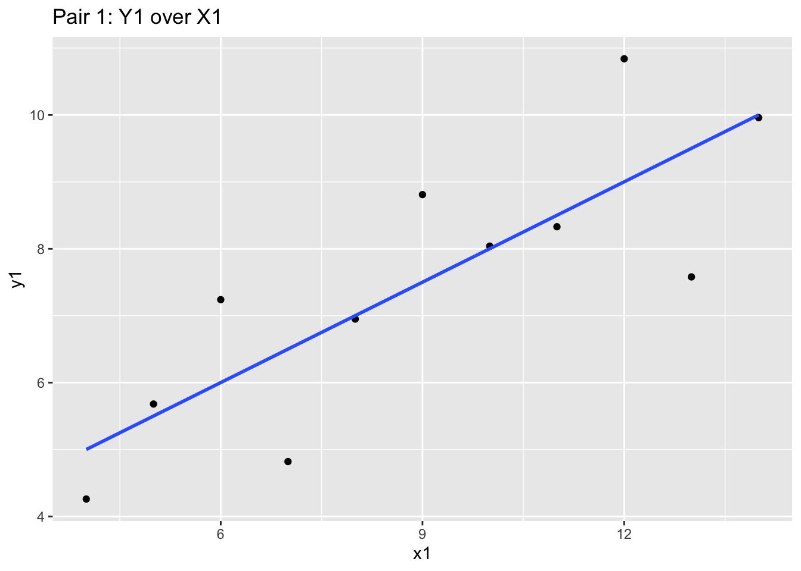
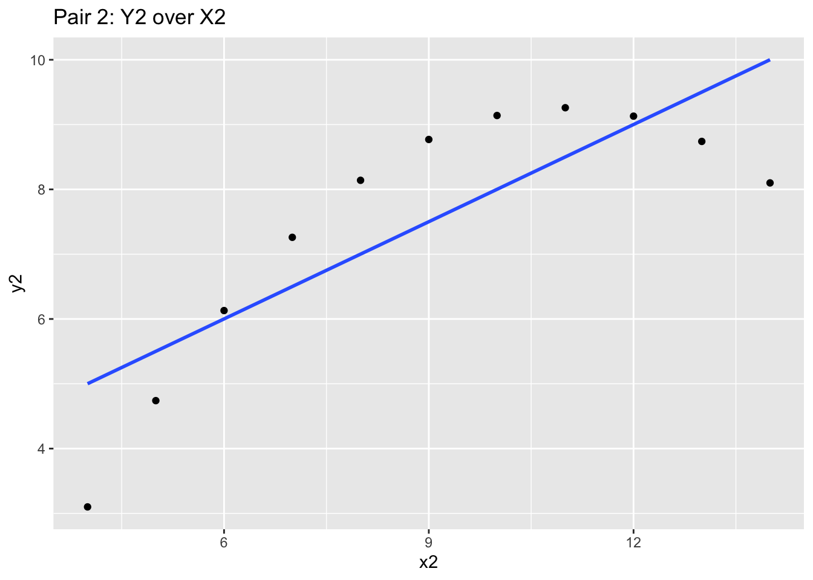
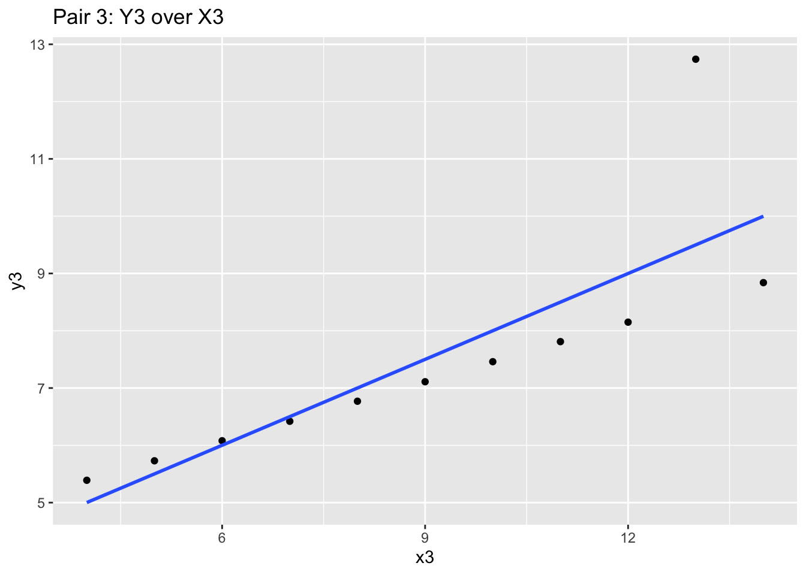
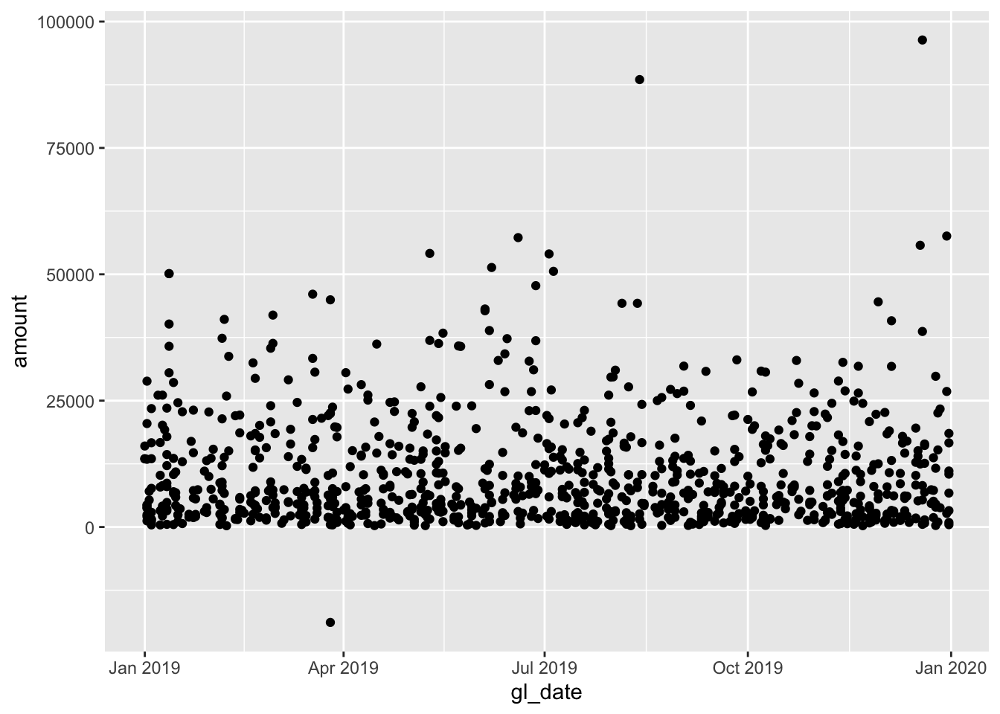
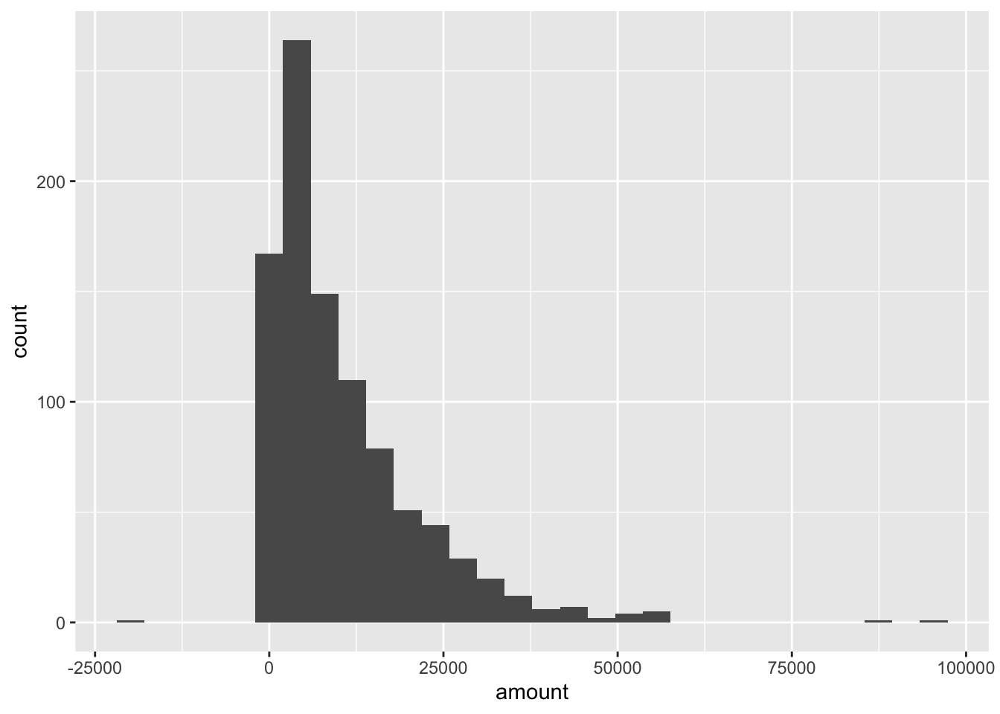
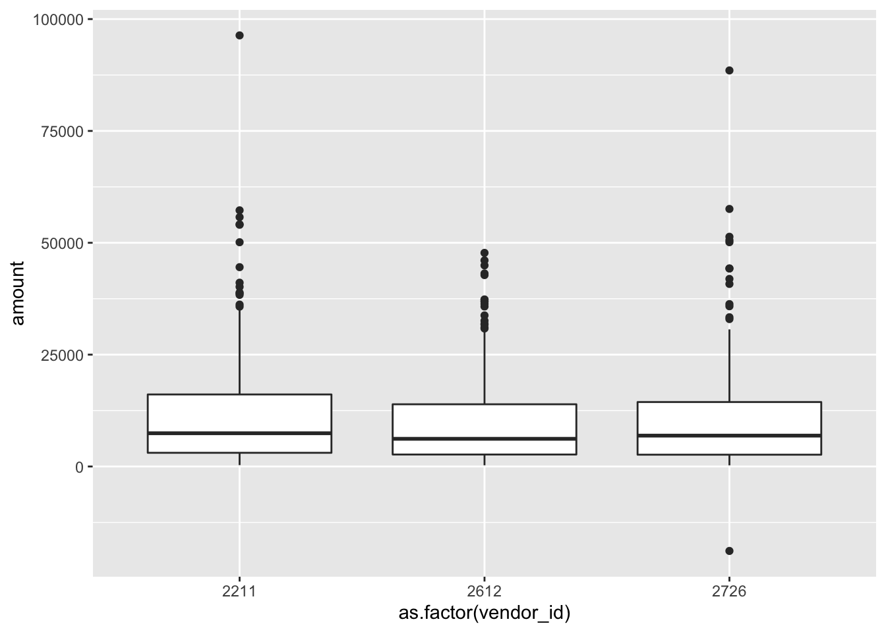
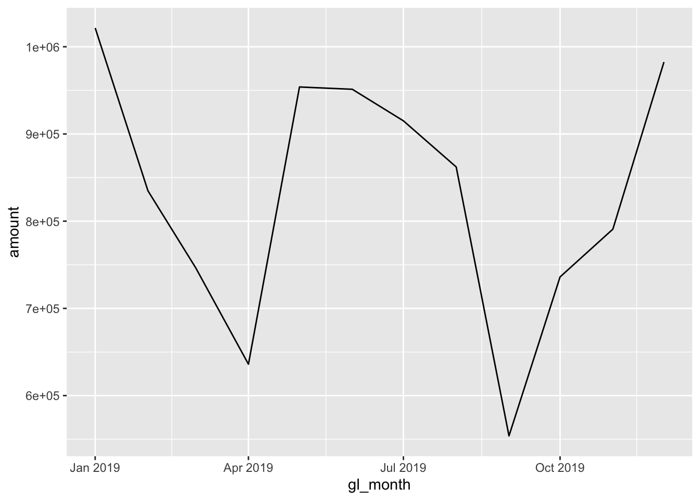
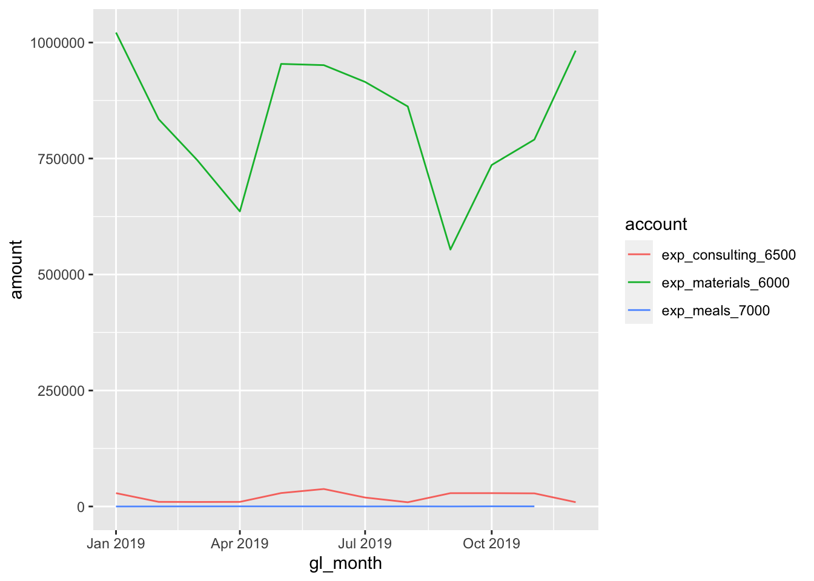
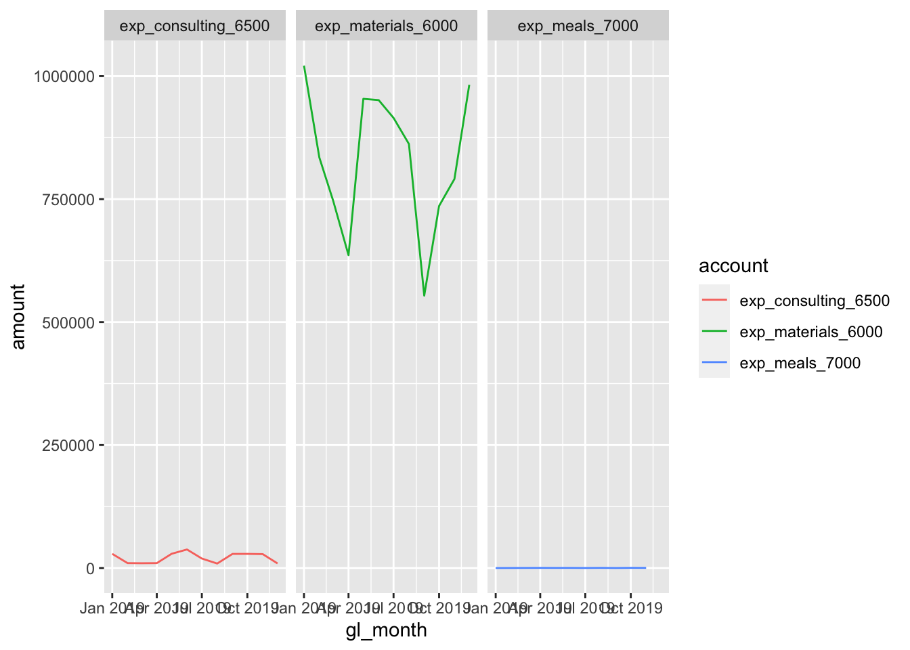

Chapter 8 Exploring data
As for exploring data, there is no quick, one-click method to explore your data, whether at a high level or in more granular detail. Realistically, you will oscillate between cleaning and exploration before you are able to better understand the data you are looking testing.
There are many primarily two methods in exploring data, both quantitatively and visually. Both are necessary methods for understanding data, at a quantitative and also a human level.
For this section we will still use the same company database, and also another unique dataset, along with some more packages - mainly, ggplot2.
library(dplyr)
library(tidyr)
library(lubridate)
library(DBI)
library(ggplot2) # For graphics
dir.create("data", showWarnings = FALSE)
download.file(url = "https://github.com/jonlinca/auditanalytics/raw/master/data/rauditanalytics.sqlite",
destfile = "data/rauditanalytics.sqlite", mode = "wb")
con <- dbConnect(RSQLite::SQLite(), "data/rauditanalytics.sqlite")
gl <- tbl(con, 'gl') %>%
collect()
dbDisconnect(con)8.1 Basic Statistics
Performing summaries, or profiling the data, is a great way to begin analyzing data. It allows you to understand general numeric performance of a group. More importantly, understanding the characteristics of a datset, including mean, median, and percentiles are useful, as they help you determine what is both normal and abnormal in your data.
In our GL account, we have a materials category - lets isolate by that and begin our analysis:
materials <- gl %>%
filter(account == 'exp_materials_6000') %>%
mutate(gl_date = as_date(gl_date_char)) %>% # We demonstrated how to handle dates in the Cleaning chapter
select(-gl_date_char)summary() gives a high level preview of each field, including the type and the statistical profile of the data table:
summary(materials)## je_num amount gl_date vendor_id
## Min. : 1.0 Min. :-18873 Min. :2019-01-01 Min. :2211
## account invoice_date description paid_date
## Length:952 Min. :17887 Length:952 Min. :17900
## [ reached getOption("max.print") -- omitted 5 rows ]If we focus on amount, we can reproduce the same summaries as well, useful if we want to extract items relative to the criteria:
min(materials$amount)## [1] -18872.85max(materials$amount)## [1] 96354.61mean(materials$amount) # The average## [1] 10487.93median(materials$amount) # The value in the middle between upper half and lower half. If these are different than the average, then you may expect some skew in the data set.## [1] 6816.1Quartiles are useful because they help you generally understand where the majority of the data lies. These also also known as quantiles (or percentiles), but they cover the same area of a normal curve.
quantile(materials$amount) # Look familiar?## 0% 25% 50% 75% 100%
## -18872.85 2771.07 6816.10 15050.09 96354.61quantile(materials$amount)[2] # This is the 1st quartile, or the 25% quantile## 25%
## 2771.07quantile(materials$amount)[4] # This is the 3st quartile, or the 75% quantile## 75%
## 15050.09IQR(materials$amount) # The difference between 3rd and 1st quartile## [1] 12279.02You may have missing values in your data set that show up as NA. Its important to recognize how you will diagnose and treat NAs. If a column has NAs, you may choose to remove them by using the argument na.rm = TRUE, which simply ignores these values when performing the calculation.
some_nums <- c(1, 2, NA, 3, 4, 5)
mean(some_nums) # Returns NA## [1] NAmean(some_nums, na.rm = TRUE) # Removes the NA value prior to caluclating the mean## [1] 3In accounting, it may be important to know the absolute value of a number. They’re useful in audit situations as they help express total activity of the subject, as positive and negative values may either zero out the total or mask credit activity and reversals. They’re also useful for calculating errors, as you may be not concerned about the direction of the error (debit or credit) but the total magnitude instead.
sum(materials$amount)## [1] 9984507abs(sum(materials$amount))## [1] 9984507We can even do basic correlation plots in R of two numerical data sets:
x <- c(1, 2, 3, 4)
y <- c(2, 4, 6, 8)
cor(x, y) # The correlation of X and Y. 1 means positively highly correlated, -1 means negatively highly coorelated, and 0 means no discerable pattern.## [1] 18.2 Summarizations
While calculating one-off summary statistics is useful, you may want to perform summation or summary statistics, whether by an entity (a vendor) or by time frame (month, year). R provides methods for summarizing this information, with a combination of two verbs.
group_by()enables you to indicate the levels you want to aggregate (for example, by vendor or by month),summarize()requires you to create new columns to contain the calculation or aggregation you want to occur (for example,sumormean).
The materials table has a vendor_id number. We can try to perform a group_by()…
materials %>%
group_by(vendor_id)## # A tibble: 952 x 8
## # Groups: vendor_id [3]
## je_num amount gl_date vendor_id account invoice_date description paid_date
## <int> <dbl> <date> <int> <chr> <dbl> <chr> <dbl>
## 1 1 22667. 2019-12-02 2211 exp_ma… 18225 Packaging … 18262
## 2 2 1397. 2019-11-28 2612 exp_ma… 18218 Paper 18251
## 3 3 2319. 2019-04-09 2612 exp_ma… 17985 Paper 18018
## 4 4 20037. 2019-10-30 2612 exp_ma… 18189 Paper 18222
## 5 5 43140. 2019-06-04 2612 exp_ma… 18041 Blue dye 18074
## 6 6 13603. 2019-01-31 2726 exp_ma… 17920 Medical gr… 17930
## 7 7 7001. 2019-10-21 2726 exp_ma… 18183 Quality co… 18193
## 8 8 24753. 2019-04-24 2211 exp_ma… 18003 Packaging … 18040
## 9 9 2295. 2019-07-10 2726 exp_ma… 18080 Quality co… 18090
## 10 10 34263. 2019-06-13 2211 exp_ma… 18053 Packaging … 18090
## # … with 942 more rowsBut it will return nothing. The group_by() will tell R what to group by, but not perform any additional calculations. Hence, the summarize():
materials %>%
group_by(vendor_id) %>%
summarize(total_amount = sum(amount))## # A tibble: 3 x 2
## vendor_id total_amount
## * <int> <dbl>
## 1 2211 3650465.
## 2 2612 2951279.
## 3 2726 3382764.Summarize will isolate the data set first by the groups specified, and then perform the calculation and put the results into a new field. This works for all summary statistics as well. For example, if you want to find the number of transactions, and the highest and lowest amount charged per description:
materials %>%
group_by(description) %>%
summarize(number_of_trans = n(),
lowest_amount = min(amount),
highest_amount = max(amount))## # A tibble: 11 x 4
## description number_of_trans lowest_amount highest_amount
## * <chr> <int> <dbl> <dbl>
## 1 Blue dye 40 1071. 43140.
## 2 Fabric cutting machines 34 432. 44950.
## 3 Face mask elastics 37 526. 42785.
## 4 Fancy cloth prints 46 294. 37269.
## 5 Meals for launch celebration 1 1630. 1630.
## 6 Medical grade filters 156 258. 57567.
## 7 Packaging and boxes 316 304. 96355.
## 8 Paper 134 284. 47748.
## 9 Partial refund for medical grad… 1 -18873. -18873.
## 10 Quality control testing supplies 169 273. 88524.
## 11 Sewing machines 18 268. 36332.8.3 Data Visualization - Why
With such useful statistical and summary functions, you may wonder why you ever need to delve into graphics. While summary statistics are fun (and perhaps, highly accurate and even ‘authoritative’), they don’t help bring to light full patterns of your data. The power of visual deduction can not be understated, especially in situations where superficially summary statistics have no issues.
Consider this data set, which are merely 4 pairs of x-y values (i.e. x1 goes with y1 etc):
anscombe## x1 x2 x3 x4 y1 y2 y3 y4
## 1 10 10 10 8 8.04 9.14 7.46 6.58
## [ reached 'max' / getOption("max.print") -- omitted 10 rows ]If we did statistical testing on these pairs, we will notice they have nearly identical summary statistics:
mean(anscombe$x1); mean(anscombe$x2); mean(anscombe$x3); mean(anscombe$x4)## [1] 9## [1] 9## [1] 9## [1] 9mean(anscombe$y1); mean(anscombe$y2); mean(anscombe$y3); mean(anscombe$y4)## [1] 7.500909## [1] 7.500909## [1] 7.5## [1] 7.500909And even their correlatons are similar:
cor(anscombe$x1, anscombe$y1); cor(anscombe$x2, anscombe$y2); cor(anscombe$x3, anscombe$y3); cor(anscombe$x4, anscombe$y4)## [1] 0.8164205## [1] 0.8162365## [1] 0.8162867## [1] 0.8165214With the mean and correlation statistics, you may jump to the conclusion that these datasets may be shaped identically. However, we should seriously consider plotting the data to validate our initial assumption that the data is similar.
We will use the ggplot2 to chart these x-y pairs and try to understand the data we are looking at. We’ll explain ggplot2 syntax later, so for now, focus on the graph produced.
If we produce the four graphs together, what do you notice?
ggplot(anscombe, aes(x = x1, y = y1)) +
geom_point() +
stat_smooth(method="lm", se = FALSE) +
labs(title="Pair 1: Y1 over X1")
ggplot(anscombe, aes(x = x2, y = y2)) +
geom_point() +
stat_smooth(method="lm", se = FALSE) +
labs(title="Pair 2: Y2 over X2")
ggplot(anscombe, aes(x = x3, y = y3)) +
geom_point() +
stat_smooth(method="lm", se = FALSE) +
labs(title="Pair 3: Y3 over X3")
ggplot(anscombe, aes(x = x4, y = y4)) +
geom_point() +
stat_smooth(method="lm", se = FALSE) +
labs(title="Pair 4: Y4 over Y4")
These four charts and scatterplots themselves are quite different! While the blue correlation line and the prior summary statistics are similar, the points all follow a different general path. Independently looking at the graphics for each one will give you different insight, and may influence your audit approach. Graphics matter a lot!
8.4 Data Visualization - How
ggplot2 is the package that many consider to be one of the differentiating strengths of the R universe. It is one of the most elegant methods of visualizing data, and will help you understand your audit subject.
Back to our materials analysis.
materials %>%
arrange(gl_date) %>%
head()## # A tibble: 6 x 8
## je_num amount gl_date vendor_id account invoice_date description paid_date
## <int> <dbl> <date> <int> <chr> <dbl> <chr> <dbl>
## 1 373 13520. 2019-01-01 2612 exp_mat… 17887 Paper 17920
## 2 951 13486. 2019-01-01 2612 exp_mat… 17887 Paper 17920
## 3 961 16026. 2019-01-01 2726 exp_mat… 17890 Quality co… 17900
## 4 90 3777. 2019-01-02 2612 exp_mat… 17888 Face mask … 17921
## 5 115 13402. 2019-01-02 2211 exp_mat… 17891 Packaging … 17928
## 6 198 2431. 2019-01-02 2612 exp_mat… 17888 Face mask … 17921Perhaps we want to start analyzing the change over time for the amount spent. The gl_date is useful here, although there are many transactions that occur on the same date. We also have a vendor_id as well, identifying the vendor that the transaction the invoice belongs to.
Generally we will want our time to be the x variable (the dependent variable), and the amount spent to be the y variable (the independent variable). We can insert the x and y into a ggplot function and generate the visualization we think may reveal useful infromation.
ggplot(data = materials, mapping = aes(x = gl_date, y = amount)) +
geom_point()
The foundations of any ggplot are essentially:
data- The data frame you want to visualize,mapping- The aesthetics, which dictate the x and y (generally for the rest of the ggplot), andgeom_*- The visualization mechanism you want to apply to represent the data points.
When you specify a single mapping up front, it will be used for all the subsequent geoms called. You can also specify a mapping for each geom as well, which is useful for isolating points.
This foundations layer of data, mapping and geom_* allows us to call different geoms and perspectives of looking at the data.
For example, histograms are useful to understand the shape of a dataset:
ggplot(materials, aes(x = amount)) + # data is the first default argument, and mapping is the second
geom_histogram()
And boxplots are useful to understand the distribution of the data:
ggplot(data = materials, aes(x = as.factor(vendor_id), y = amount)) +
geom_boxplot()
8.4.1 Time-series
As the gl table (and materials subset) is a time-series data, containing both the transaction date and amount, we may want to try plotting a line chart to see the movement of data over time.
ggplot(data = materials, aes(x = gl_date, y = amount)) +
geom_line()Since our time-series data has a relatively high resolution with detailed data, we may sometimes gain insight by aggregating data (by week, month, or even year). As of now, the data needs to be aggregated into a higher level time period.
monthly_mats <- materials %>%
mutate(gl_month = floor_date(gl_date, 'month')) %>% # Rounds the date down to the first of the month
group_by(gl_month) %>%
summarize(amount = sum(amount))
head(monthly_mats)## # A tibble: 6 x 2
## gl_month amount
## <date> <dbl>
## 1 2019-01-01 1021508.
## 2 2019-02-01 834766.
## 3 2019-03-01 746621.
## 4 2019-04-01 636011.
## 5 2019-05-01 953909.
## 6 2019-06-01 951240.Aggregating this same information by month may be more illustrative:
ggplot(data = monthly_mats, aes(x = gl_month, y = amount)) +
geom_line()
8.4.2 Facets
Another powerful feature of ggplot2 is facets - that is, the ability to show how different categories of the same data may look in the same dataset. In our GL dataset, we actually had multiple types of expenses:
unique(gl$account)## [1] "exp_materials_6000" "liab_accountspayable_2000"
## [3] "exp_meals_7000" "liab_creditcardpayable_2100"
## [5] "exp_consulting_6500"We can pull these specific expense accounts (starting with ‘exp_’), and can choose how we want to plot them:
expense <- gl %>%
filter(account %in% c('exp_materials_6000', 'exp_consulting_6500', 'exp_meals_7000')) %>%
mutate(gl_date = as_date(gl_date_char),
gl_month = floor_date(gl_date, 'month')) %>%
group_by(account, gl_month) %>% # Need to add a new layer of grouping to preserve the account
summarize(amount = sum(amount))## `summarise()` has grouped output by 'account'. You can override using the `.groups` argument.ggplot(data = expense, aes(x = gl_month, y = amount, colour = account)) + # We can specify the colour now too, depending on the geom_*
geom_line()
Instead of plotting them onto the same chart, we can facet_* them:
ggplot(data = expense, aes(x = gl_month, y = amount, colour = account)) +
geom_line() +
facet_grid(. ~ account) # Syntax for variable, either in the (row ~ column)... or both!